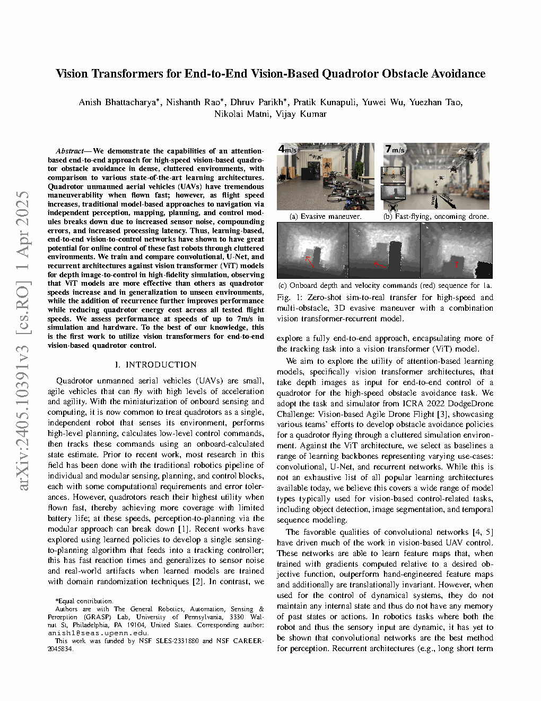
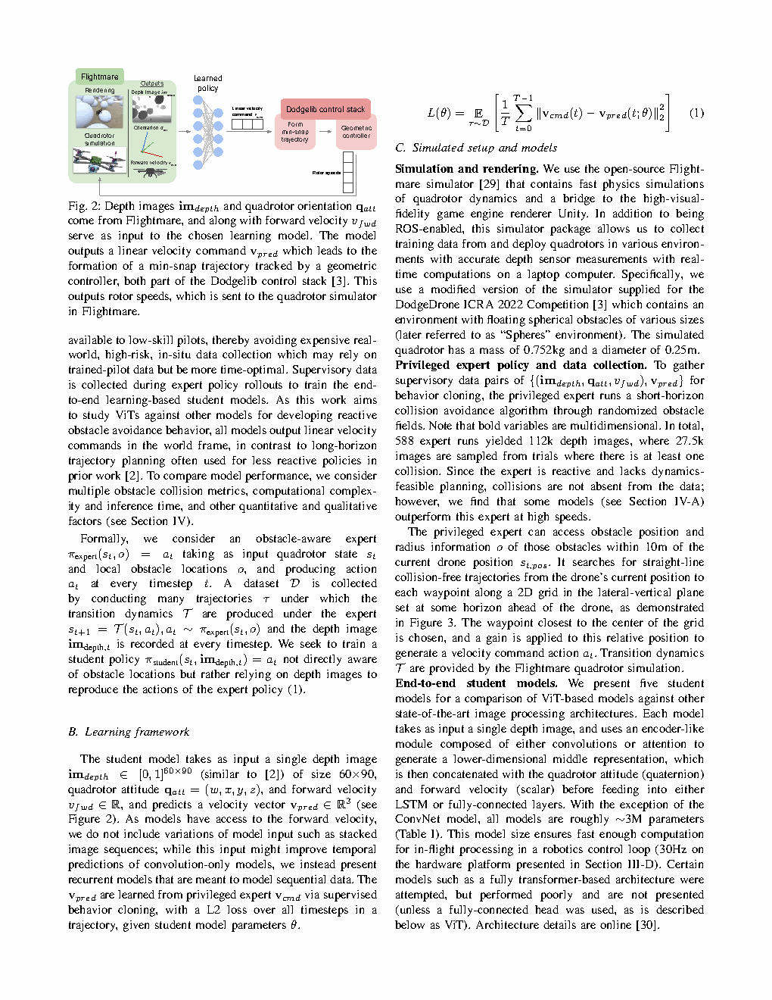
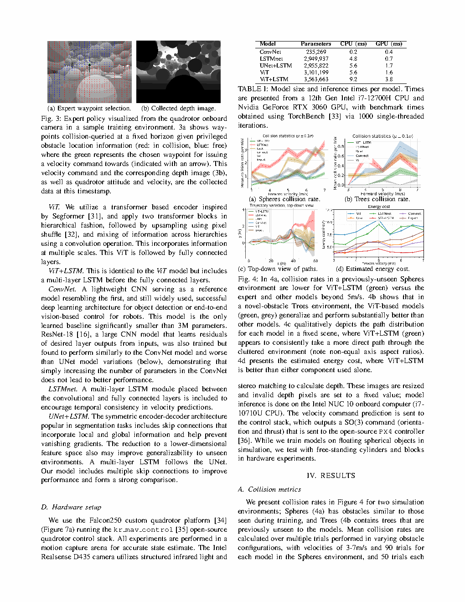
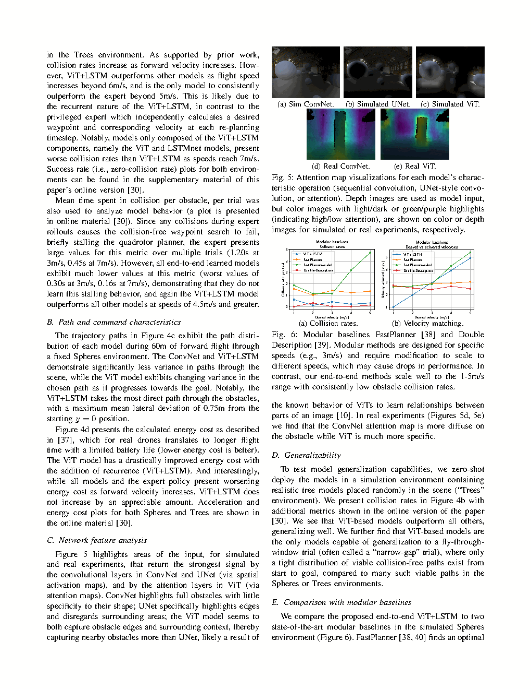
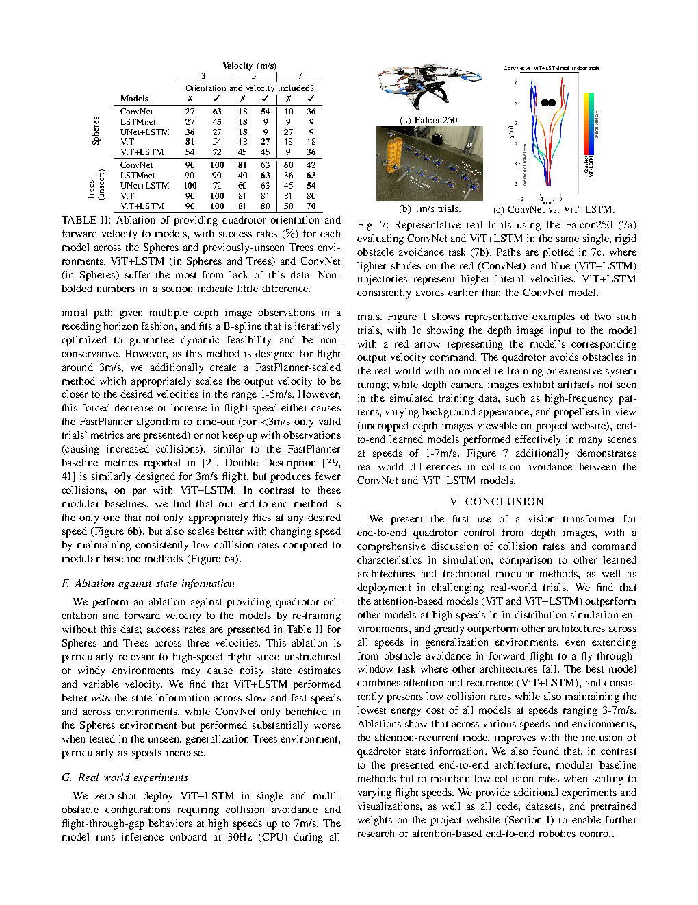

Fig. 6模块化基线对比：碰撞率和速度匹配 vs. 期望速度来源：论文 Fig. 6

图表解读
展示：为 ~3 m/s 设计的模块化基线（FastPlanner、Double Description）在其他速度下失效。FastPlanner 要么超时（< 3 m/s），要么跟不上（> 3 m/s）。Double Description 在某些速度下碰撞率与 ViT+LSTM 相当，但 ViT+LSTM 是唯一能在任何期望速度下恰当地飞行且保持持续低碰撞的方法。
| 标题 | Vision Transformers for End-to-End Vision-Based Quadrotor Obstacle Avoidance |
| 作者 | Anish Bhattacharya*, Nishanth Rao*, Dhruv Parikh, Pratik Kunapuli, Yuwei Wu, Yuezhan Tao, Nikolai Matni, Vijay Kumar (*共同一作) |
| 单位 | University of Pennsylvania, GRASP Laboratory。通讯作者: anish1@seas.upenn.edu |
| 发表 | IEEE Robotics and Automation Letters (RA-L), 2025, arXiv:2405.10391v3 |
| DOI / 链接 | arXiv: 2405.10391 | 代码: anishbhattacharya.com/research/vitfly |
| TL;DR | 首次将 Vision Transformer (ViT) 用于端到端四旋翼避障控制。在深度图像到速度指令任务上，对比了 ViT 与 ConvNet、UNet+LSTM 和 LSTMnet 架构。ViT+LSTM 在高速（>5 m/s）下优于所有模型，能够泛化到未见环境（树木、窄缝），并实现最高 7 m/s 的零样本 sim-to-real 迁移。ViT+LSTM 独有地随速度增加仍保持低能耗。基于 SegFormer 风格层级 ViT + 多层 LSTM。 |
flowchart TB
subgraph SIM["Flightmare Simulator"]
RENDER["Depth Image Rendering
60x90 pixels"]
DYNAMICS["Quadrotor Dynamics
0.752kg, 0.25m diameter"]
STATE["State: orientation q_att
forward velocity v_fwd"]
end
subgraph MODEL["Learned Policy (ViT+LSTM / ConvNet / UNet+LSTM / LSTMnet)"]
ENCODER["Image Encoder
ViT: SegFormer blocks
ConvNet: CNN layers
UNet: Encoder-Decoder"]
FEAT["Feature Vector"]
CONCAT["Concatenate with
q_att + v_fwd"]
TEMPORAL["Temporal Module
LSTM or FC layers"]
PRED["Velocity Prediction
v_pred (3D world frame)"]
end
subgraph CONTROL["Dodgelib Control Stack"]
TRAJ["Min-Snap Trajectory
Formation"]
GEO["Geometric Controller
SO(3) + thrust"]
MOTORS["Rotor Speeds
4x PWM"]
end
RENDER --> ENCODER --> FEAT --> CONCAT
STATE --> CONCAT
CONCAT --> TEMPORAL --> PRED --> TRAJ --> GEO --> MOTORS --> DYNAMICS
DYNAMICS --> STATE
classDef sim fill:#fef7ed,stroke:#f59e0b,stroke-width:2px,color:#92400e
classDef model fill:#f0ebfd,stroke:#8b5cf6,stroke-width:2px,color:#6d28d9
classDef ctrl fill:#e6f7ee,stroke:#10b981,stroke-width:2px,color:#047857
class RENDER,DYNAMICS,STATE sim
class ENCODER,FEAT,CONCAT,TEMPORAL,PRED model
class TRAJ,GEO,MOTORS ctrl
flowchart LR
DEPTH["Depth Image
60x90"] --> ENC{"Encoder Type"}
ENC -->|ViT| V1["SegFormer
2 hierarchical blocks
pixel shuffle upsample
cross-hierarchy conv"]
ENC -->|UNet| U1["UNet Encoder-Decoder
skip connections
3 levels deep"]
ENC -->|ConvNet| C1["CNN: Conv+Pool
+BN+LeakyReLU"]
V1 --> FEAT["Feature Vector"]
U1 --> FEAT
C1 --> FEAT
FEAT --> CAT["Concat with
q_att (4D) + v_fwd (1D)"]
CAT --> TEMP{"Temporal Module"}
TEMP -->|LSTM| L1["Multi-Layer LSTM
2-5 layers"]
TEMP -->|FC| F1["Fully Connected
2-3 layers"]
L1 --> OUT["Linear -> vx,vy,vz"]
F1 --> OUT
classDef img fill:#fef7ed,stroke:#f59e0b,stroke-width:2px
classDef enc fill:#e8f0fe,stroke:#3b82f6,stroke-width:2px
classDef temp fill:#f0ebfd,stroke:#8b5cf6,stroke-width:2px
classDef out fill:#e6f7ee,stroke:#10b981,stroke-width:2px
class DEPTH img
class V1,U1,C1,FEAT,CAT enc
class L1,F1 temp
class OUT out
flowchart TD
subgraph EXPERT["Privileged Expert Data Collection"]
E1["Obstacle-aware expert
accesses obstacle positions
within 10m radius"]
E2["Searches 2D grid waypoints
at fixed horizon"]
E3["Selects collision-free waypoint
closest to center"]
E4["Applies gain -> velocity cmd
Collects: depth_image, q_att, v_fwd, v_cmd"]
end
subgraph TRAIN["Behavior Cloning Training"]
T1["588 expert runs -> 112k depth images
27.5k with collisions"]
T2["Student model: imdepth -> v_pred"]
T3["L2 loss: E[||v_cmd(t) - v_pred(t; theta)||^2]"]
T4["Adam optimizer, lr=1e-4, batch=100, 100 epochs
Select best validation loss model"]
end
subgraph DEPLOY["Zero-Shot Deployment"]
D1["Simulation: Spheres (in-distribution)
+ Trees (unseen generalization)
+ Narrow-gap (extreme)"]
D2["Real: Falcon250 + Intel Realsense D435
Single/multi obstacle + flight-through-gap
1-7 m/s, onboard inference 30Hz CPU"]
end
E1 --> E2 --> E3 --> E4 --> T1 --> T2 --> T3 --> T4 --> D1 --> D2
classDef expert fill:#fef7ed,stroke:#f59e0b,stroke-width:2px,color:#92400e
classDef train fill:#e8f0fe,stroke:#3b82f6,stroke-width:2px,color:#1d4ed8
classDef deploy fill:#e6f7ee,stroke:#10b981,stroke-width:2px,color:#047857
class E1,E2,E3,E4 expert
class T1,T2,T3,T4 train
class D1,D2 deploy
| 类别 | 内容 | 维度 |
|---|---|---|
| 输入 | 单张深度图像 + 四旋翼姿态（四元数）+ 前向速度 | 深度: 60x90; q_att: 4D; v_fwd: 1D |
| 输出 | 世界坐标系中的 3D 线速度指令，送入 Dodgelib 控制栈 | v_pred: 3D (vx, vy, vz) |
| 目标 | 在密集静态障碍物中向前飞行 60m，最小化碰撞 | 碰撞率、能耗、路径偏差 |
端到端基于视觉的高速四旋翼反应式避障（3-7 m/s）。这是一个直接感知到控制的任务：原始深度图像 -> 速度指令，无中间建图、规划或轨迹优化。四旋翼（0.752kg, 0.25m 直径）在随机放置静态障碍物的密集环境中向前飞行。特权专家（使用真值障碍物位置进行短时域无碰撞航点搜索）生成监督训练数据。学生模型学习仅从深度图像模仿专家，然后评估碰撞率、能耗、对未见障碍物类型（Trees）的泛化以及真实世界零样本迁移。这是首次针对此特定任务研究 ViT 架构。
| 先前方法 | 核心思想 | 局限性 |
|---|---|---|
| 模块化：FastPlanner / Double Description | 深度图像 -> 建图 -> B-样条轨迹优化 -> 控制 | 为特定速度（~3 m/s）设计。需要调参以扩展到不同速度。处理延迟在高速下导致碰撞。非端到端可学习。 |
| 基于 CNN 的端到端（Loquercio et al. 2021, Science Robotics） | 训练 CNN 将深度图像直接映射到控制指令 | CNN 的空间上下文感受野有限。无时序建模——速度指令可能突变。在 >5 m/s 时性能退化。 |
| 循环模型（基于 LSTM） | CNN 编码器 + LSTM 解码器实现时序一致性 | 时序平滑性优于纯 CNN，但仍受限于 CNN 编码器无法建模深度图像中的长程空间依赖。 |
从特权障碍物感知专家的行为克隆。专家在四旋翼前方的固定前瞻距离处搜索 2D 网格航点，查询每个航点是否与已知障碍物（10m 内）碰撞，选择最靠近中心的无碰撞航点，并应用比例增益生成速度指令。学生模型训练仅从深度图像预测相同速度指令（无障碍物位置访问）。训练：588 条专家轨迹 -> 112k 深度图像，27.5k 包含碰撞。所有时间步的 MSE 损失。Adam 优化器，lr=1e-4，weight decay=1e-3，batch=100，100 epochs。选择最佳验证损失模型。
| 模型 | 参数量 | CPU (ms) | GPU (ms) | 关键组件 |
|---|---|---|---|---|
| ConvNet | 235,269 | 0.2 | 0.4 | CNN + Average/Max Pool + BN + FC |
| LSTMnet | 2,949,937 | 4.8 | 0.7 | CNN + 5-layer LSTM + FC |
| UNet+LSTM | 2,955,822 | 5.6 | 1.7 | 3-level UNet with skip + 2-layer LSTM + FC |
| ViT | 3,101,199 | 5.6 | 1.6 | SegFormer (2 blocks) + FC |
| ViT+LSTM | 3,563,663 | 9.2 | 3.8 | SegFormer (2 blocks) + 3-layer LSTM + FC |
核心架构洞察在于空间推理的表示能力。在避障中，关键问题是："给定深度图像中所有可见的障碍物，可行的飞行通道在哪里？"这本质上是一个全局空间推理问题：
这解释了实验结果：基于 ViT 的模型是唯一能在窄缝（穿越窗户）任务中成功的模型——因为该任务需要在障碍物中识别特定的狭窄通道，需要全局空间推理。
在视觉编码器后添加 LSTM 层提供了速度指令的时序平滑。四旋翼是欠驱动动力学系统——瞬时突变的速度变化导致跟踪误差、能源浪费和潜在不稳定。LSTM 维护内部状态，促使速度指令随时间保持一致。
循环收益的关键证据：
不同架构对未见环境（Trees）和任务（窄缝）的泛化不同：

将截图保存为figures/fig1.png展示：(a) 规避静态障碍物的第三人称视角。(b) 机载视角躲避快速迎面飞来的无人机。(c) 带红色速度指令箭头的机载深度图像序列。展示了在真实硬件上的零样本部署，无需模型重新训练或系统调参。

将截图保存为figures/fig2.png展示：来自 Flightmare 仿真器的深度图像和四旋翼状态（q_att, v_fwd）-> 选定学习模型预测 v_pred -> min-snap 轨迹生成 -> 几何控制器 -> 电机转速 -> 四旋翼动力学。模块化设计将学习的感知到指令与基于模型的跟踪控制器分离。

将截图保存为figures/fig4.png(a) Spheres: ViT+LSTM（绿色）在 5 m/s 以上碰撞率最低——唯一持续优于专家的模型。(b) Trees: 基于 ViT 的模型（绿色、灰色）泛化显著优于其他。(c) 路径: ViT+LSTM 走最直接的路径，横向偏差最小（最大 0.75m）。(d) 能耗: ViT+LSTM 独有地在速度增加时保持低且恒定的能耗。

将截图保存为figures/fig5.png展示：仿真（上行）和真实（下行）注意力图。ConvNet: 整个障碍物上的分散高亮——特异性低。UNet: 清晰边缘，忽略周围环境。ViT: 障碍物边缘及周围上下文——比 UNet 捕获更多附近障碍物。在真实实验中，ConvNet 注意力在障碍物上分散，而 ViT 对障碍物边界的特异性高得多。
展示：为 ~3 m/s 设计的模块化基线（FastPlanner、Double Description）在其他速度下失效。FastPlanner 要么超时（< 3 m/s），要么跟不上（> 3 m/s）。Double Description 在某些速度下碰撞率与 ViT+LSTM 相当，但 ViT+LSTM 是唯一能在任何期望速度下恰当地飞行且保持持续低碰撞的方法。

将截图保存为figures/fig7.png展示：(a) Falcon250 定制四旋翼平台。(b) 1 m/s 下的单一刚性障碍物避障。(c) 路径对比：ViT+LSTM（蓝色）始终比 ConvNet（红色）更早规避，轨迹更平滑。较浅的色调表示更高的横向速度。ViT+LSTM 路径更直接、方差更小。
| 问题 | 难度 | 严重性 |
|---|---|---|
| 真实世界深度传感器噪声 | Intel RealSense D435 使用结构 IR + 立体视觉——产生伪影（反射面上缺失深度、视野中有螺旋桨护罩）。在干净仿真深度上训练的模型必须隐式处理这些。 | **** |
| 状态估计质量 | 模型接收 q_att 和 v_fwd 作为输入。在真实飞行中，这些来自运动捕捉（室内）或机载 VIO（室外）。噪声状态估计会退化性能——消融实验显示 ViT+LSTM 在 Trees 环境中对状态移除最敏感。 | **** |
| 障碍物密度 | 碰撞率取决于障碍物密度。Spheres 环境密度可控；真实世界密度变化巨大。无系统性密度消融实验。 | *** |
| 训练数据碰撞比例 | 112k 中 27.5k 张带碰撞图像——模型从成功和失败的专家行为中学习。训练数据中最优碰撞比例未被研究。 | *** |
| 参考文献 | 重要性 |
|---|---|
| Loquercio et al. (2021) -- Learning High-Speed Flight in the Wild. Science Robotics | 使用 CNN 从深度图像进行端到端四旋翼飞行的 state-of-the-art——本工作的直接前身和基线。 |
| Dosovitskiy et al. (2020) -- An Image is Worth 16x16 Words: Transformers for Image Recognition. arXiv:2010.11929 | 原始 ViT 论文——确立了 Vision Transformer 在图像识别中与 CNN 竞争的地位。 |
| Xie et al. (2021) -- SegFormer. NeurIPS 2021 | 本工作中使用的 ViT 编码器架构：带高效自注意力与 Mix-FFN 的层级 Transformer。 |
| Song et al. (2020) -- Flightmare. CoRL 2020 | 用于训练和评估的仿真器：快速物理 + 高保真度 Unity 渲染。 |